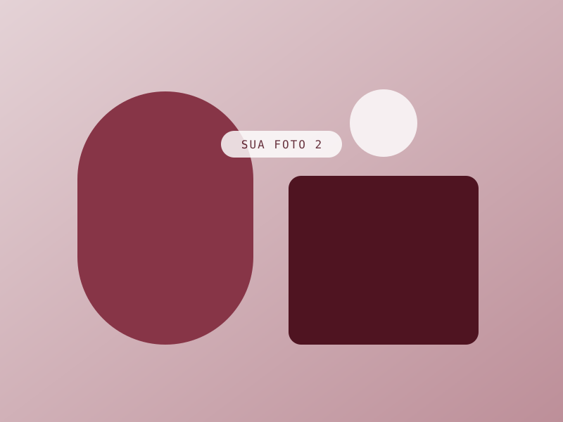
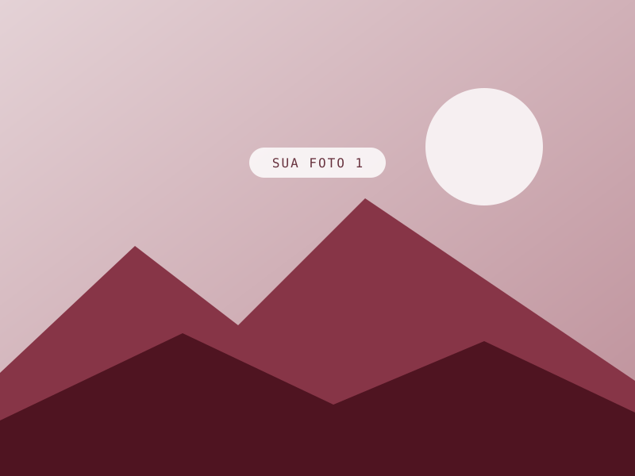
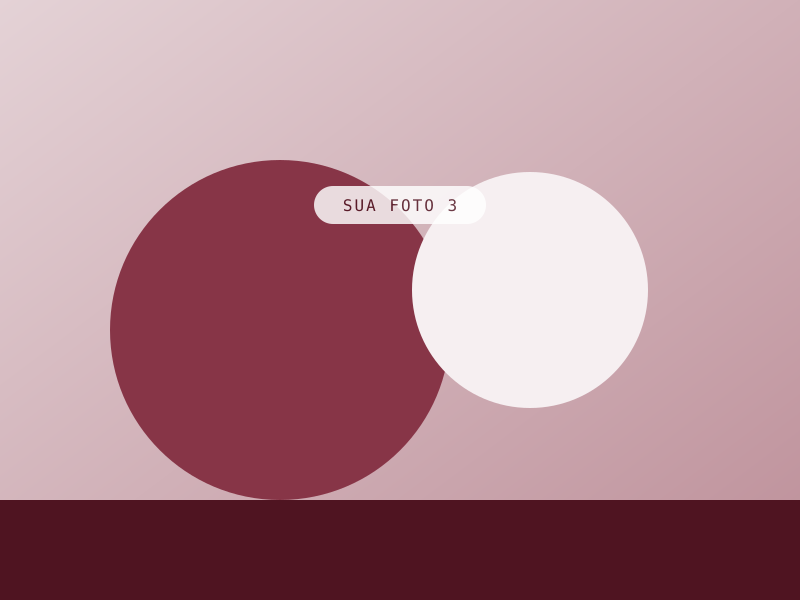

Desde 2015
Receitas de família, ingredientes frescos e aquele cheirinho de comida feita com calma.



Pão de fermentação natural, tomate, manjericão e azeite.
Seis unidades, com maionese de ervas.
Folhas, frutas da época e castanhas.
Arroz arbóreo, mix de cogumelos e parmesão.
Acompanha purê rústico e legumes grelhados.
Talharim artesanal com molho de tomates assados.
Rua das Flores, 120Centro
Terça a domingo11h às 23h
(00) 00000-0000@cantinabella